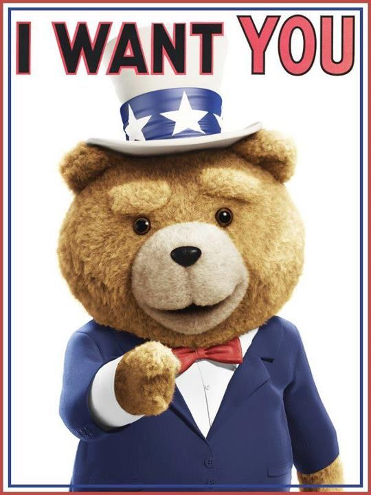

Section 1 : L'invasion
Cette section montrera une fraction de l'armée
du pôle nord ( on peut dire qu'elle montrera que la pointe
de l'iceberg ).
HAHAHAHAHAHAHAHAHAHAHAHAHAHAHAHAHAHAHAHAHAH
Section 2 : Rejoignez-nous!
Dans cette section, vous metterez vos coordonés pour joindre
nos rang. La position de notre base secrete sera aussi dévoilé
à cette endroit.

Section 3 : L'histoire et Donations
Finalement, la dernière sections s'étend sur deux pages
pour présenter l'histoire de la grande guerre blanche.
Vous pourrez aussi faire une généreuse donations du montant de votre choix
pour soutenir les familles des tombés au combat.